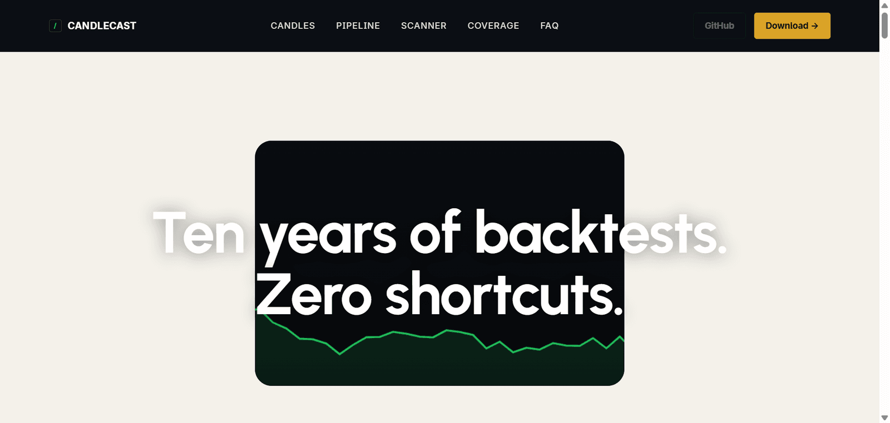
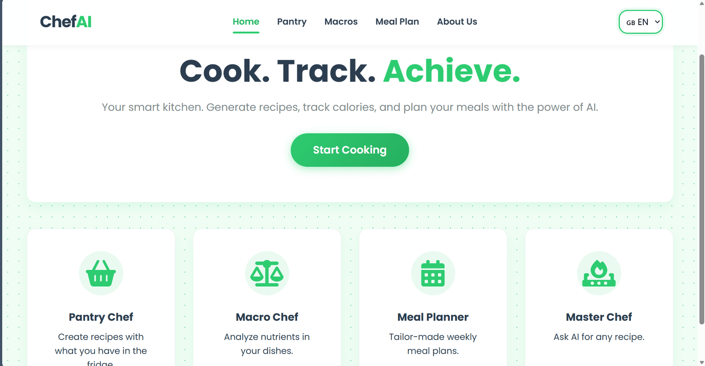
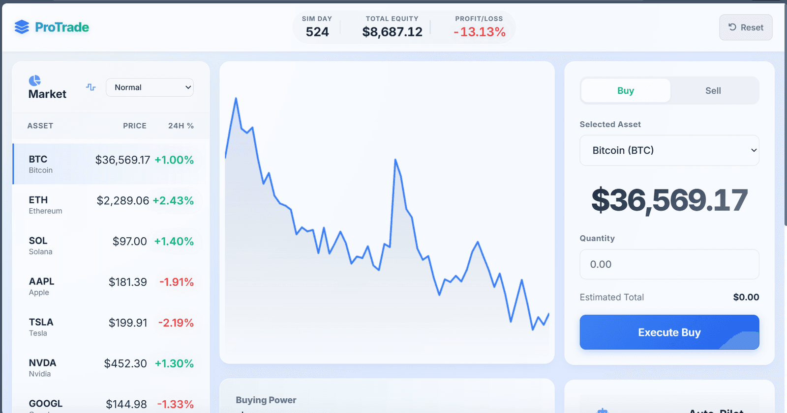
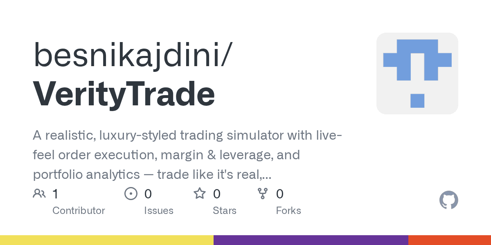

01
Candlecast — Stock Prediction
An open-source stock-direction predictor built on real technical indicators, news sentiment and honest, walk-forward backtesting — no inflated accuracy claims.
„Man cannot discover new oceans unless he has the courage to lose sight of the shore.“ — André Gide
( About )
The things that represent me are the ones you can see in the photos. I really enjoy training because it keeps me healthy and gives me that push of discipline that everyone needs in life to keep moving forward. The sea represents vacations — when I'm on vacation I get to see my family again, I let go of all the stress I carry inside, and I only think about enjoying life. Even if it's just for a few weeks, I make the most of those moments. Those haircuts were done by me — I've been cutting hair for friends, but also for people I've gotten to know, for a while now. This has helped me open up: I used to be a shy person, but thanks to this new hobby I've learned to talk to people, to socialize and understand them better.
Why IMS? Good question. It wasn't a precise choice, but a spontaneous one. I've learned that the best paths are the unexpected ones — spontaneity is the best way to discover yourself, and that's exactly what happened to me. Now I'm here, learning more and more every day, and ready to face the toughest challenges.
My goal is to create something that changes people's lives — something that makes life easier and helps those who need it most. That's why, thanks to this profession of mine, I'm able to turn my goals into reality.
I call myself an explorer for a simple reason: I love taking the harder path. You can only improve yourself when you step out of your comfort zone and take a new path — obviously a difficult one — just like it happened to me. There are people who have been doing this for years, and that pushes me to work harder and keep improving to surpass everyone.
I call myself a perfectionist. I only stop working on a project when I believe it's perfect. For me, quality is the most important thing about a job — I don't care how long it takes, what matters is that it turns out right, and until then I never stop.
The thing that matters most to me — family. Family represents everything I have. They are the ones who have always supported me, and they are the reason I keep going and push myself further every day. They sacrificed for me, and now it's my turn.
Frontend
Mobile
Backend
Database
System & Tools
Soft Skills

01
An open-source stock-direction predictor built on real technical indicators, news sentiment and honest, walk-forward backtesting — no inflated accuracy claims.

02
An intelligent web app that generates recipes based on available ingredients, with filters for specific foods and the ability to save favorites.

03
Trading simulator for practicing and testing strategies in a clear, interactive interface.

Background
08.2024 — present
Aarau, Switzerland
Currently in training. Combines computer science with a broad general education; graduates with a Federal VET Diploma in IT and a vocational baccalaureate. Technical focus (BBB Baden): application development (C#, web, databases), systems engineering and agile project methods.
04.2023 — 07.2024
Oftringen, Switzerland
Completed secondary school (Bezirksschule) in preparation for further education at IMS Aarau.
09.2022 — 03.2023
Aarau, Switzerland
Integration program to prepare for the Swiss school system and to deepen German language skills.
09.2019 — 06.2022
Cingoli, Italy
Completed secondary school in Italy with a solid foundation in mathematics, sciences and languages.
09.2014 — 06.2019
Cingoli, Italy
Primary education in Italy focused on reading, writing, mathematics and first foreign language lessons.
This section is deliberately kept compact — as more projects come along, the list here will grow automatically.